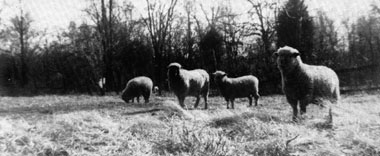
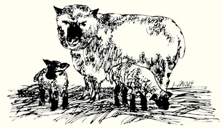
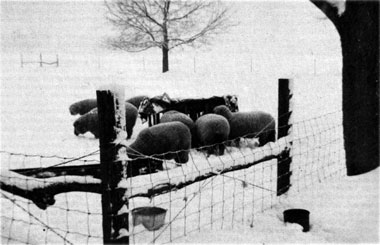

If you're thinking of getting started with sheep, I envy you the adventure ... and maybe I can help you to avoid some of the misadventures.
My own life with the woolies began 25 years ago when I brought five sheep home to the farm in a station wagon. The road ran through a hilly town, and-as the car followed the ups and downs of the terrain-my introduction to the creatures was the sight in the rear-vision mirror of horns sliding toward the back of my head.
The next few days brought both joy and sorrow. One of the ewes suddenly gave birth to a lamb out of season, and all the other sheep sickened. I leaned on the fence rails and wept while my flock died.
Then I did what I should have done in the first place: I visited the county agent and did some research on my own. Although I had lived in the country all my life I didn't know a thing about sheep, and now I admitted it. (Lesson One: Never buy animals out of a strange flock unless you check them first for internal parasites.)
My second little flock of four were Suffolks, long-legged, strong and springy. I watched while they leaped 46-inch fences, sold them to someone else the next day and bought half a dozen clean Hampshires ... the breed I've raised to this day.
I'm not writing this for people who want to go into show sheep, or any other kind of sheep business. My suggestions are for the contemporary homesteader who just wants to raise a few of the animals.
If you live on the land, there are four healthy reasons for bringing woolies onto your place and making them a part of your own earth-family: [ 1 ] Sheep are good meat producers. If lamb isn't your bag, you can sell the young of your flock and spend the money on some other meat. Put that on your table with your cost-free vegetables and you'll have balanced your diet and your budget too. [2] Sheep will keep all your fields, fence lines and yards clean and trim. [3] They're the easiest of all barnyard animals to handle physically, to pasture, feed and house. [4] Your flock will provide a very valuable manure as composit for the garden.
Then, of course, there's the wonder of wool. How far you go with it depends on your circumstances and temperament. You can make some small money off the shearings ... or you can explore, as I did, the whole fascinating gamut of handspinning and weaving. Try it if you can.
Also, if you butcher out your own mutton, save some whole sheepskins and tan them yourself. It's really not difficult to have beautiful fleece rugs and covers for practically no cost at all.
Anyway, you'll just plain love sheep. You'll never again call anyone "muttonhead" and you'll learn what it really means to "get fleeced". Your sympathy will be all with the woolies. Inevitably, they bring wonderment to a landscape and to your peaceful life there.
I can swear-after 25 years of experience-that if you grow all your own hay and grain, a flock of sheep will not only keep your place trim, clean and manured but will also provide you with your entire meat supply (from lamb or lamb money) for practically nothing. For many years before I achieved this stage of enlightened self-sufficiency, I had a compromise arrangement: Every season I let out a 12-acre field for cash-cropping (following conservation practices set down by me) in exchange for my woolies' grain or hay needs or their cash equivalent. Life is much easier now that I personally raise the feed for my sheep.
To find out the kind of sheep that's best for you, haunt county fairs and do a little reading. You have plenty of choice: the Suffolk produces bigger lambs, the Corriedale has the best fleece, the Hampshire twins over 50% of the time, the Dorset has horns ... and there's a lot more to be learned. Pick your own breed ... which, in the long run, means "pick the one you just naturally like best". It's a little like getting married.
It's generally a waste of money to buy registered stock for the homestead flock, but do get a good ram (he'll serve 30-40 ewes). An unregistered purebred male can be purchased for about $30.00 ... half the price of one that's listed with the breeders' association. (I should point out that this article was written over a year ago and prices of all farm animals-including sheep-have risen sharply during the past few months.-MOTHER.)
Get two-year-old ewes-no younger, no older-to begin with. About $15.00 a head is a good medium price. By the way, if you have to choose between ewes of different ages, always pick the older. Very young females often don't make good mothers ... as if to say clearly that they're not ready to settle down yet.
Always check sheep for evidence of internal parasites: diarrhea or a dirty rear end, pale, papery-white skin at the base of the wool and paleness inside the eyelids (the latter two conditions are both symptoms of anemia). Check even if it insults the seller. His outrage will eventually give way to respect.
How many sheep should you buy? One acre of ground will support four or five ewes and their lambs (roughly speaking, and depending on what grows on the land). Don't get too large a flock, but also remember that it takes no more time and energy to feed a dozen sheep in the winter than it does to feed six.
The first thing your new sheep will do is check every inch of your fence line, excitedly but methodically. Barbed wire or electric fencing won't keep your flock from running (the animals will go right through them) ... such enclosures will just keep YOU running after the flock. It's not that the woolies really hanker to go anywhere. I think they just want to find out how smart you are. Once they know-after about half an hour-they'll immediately settle down to grazing on your place for the rest of their lives.
If you want to pass that initial test with minimum strain, get at least 36"-high woven wire fence and support it with a post set about every ten or fifteen feet. Those uprights can be the light metal kind along the run of fencing, but at the corners you'll have to install strong wooden corner posts and braces. Set all uprights at least three feet deep, stretch the wire very tight and don't string the fence more than four inches off the ground (or little lambs will get out under it).
On my place I've established about a mile of multiflora, rose hedge from plants obtained at cost from the state Natural Resources Department. In ten years these bushes have produced (except in shady spots) a good sheep-fast fence which is also dogproof and wonderful wildlife cover.
Another entire article could be written about types of pasture and management, and you'll find plenty to read on the subject. I'll just mention the basics.
Sheep are comparatively inexpensive to feed, but-like any domestic animal-they must be fed ... they have to eat more than weeds. A homestead or farm is not a wilderness, and life in confinement is less rich and balanced than life in the state of nature.
In the main, a good mixture of grasses and legumes is best ... half grass, half clover, for instance. The woolies tend to get colic from timothy in its older growth.
Sheep are ruminants: they have a stomach divided into four chambers and chew a cud. Like other animals of this type-cows, for example-they may run into trouble when one of the compartments (the rumen) fills with gas. On very lush pasture, like almost solid alfalfa or clover (especially when the fodder is wet with rain or dew), a grazing sheep can bloat and promptly drop dead of a heart attack. Unless you regularly disobey the rules of good feeding, however, bloat is not a frequent occurrence.
Fifteen years ago I planted twelve acres of bird's-foot trefoil, a comparatively new legume which is bloatproof and even higher in protein content than alfalfa. That crop is still producing good pasture here today. The seed is a little expensive, but try the plant if you can. It likes a clay subsoil and a light companion crop (in my case, one-fourth bluegrass). Bird's-foot trefoil is not pastured until its second year of growth. After that, if it's not being grazed, it will produce about two tons of very superior hay per acre.
Sheep, in general, won't eat poisonous plants such as wilted wild cherry, the toxic parts of pokeweed (inkberry), buckeye seeds, rhubarb leaves, toadstools, nightshade, etc. But keep your place clear of these menaces anyway ... and never dump old paint cans where any livestock can get at them. I've seen literally dozens of sheep and cattle killed by their peculiar appetite for the lead found in many protective coatings ... all because someone threw his refuse out on the land.
Woolies generally rest from grazing during the heat of the day, and pasture very early in the mornings and very late into the evenings and the earlier part of the night. After a while you'll be able to throw away your big wristwatch and know almost exactly what time it is by the comings and goings of your flock.
Simple, well-lighted, well-ventilated and dry ... that almost says it all. Allow about 15 square feet per animal. Overcrowding must be avoided for several reasons, one of which is that pregnant ewes may abort from crowding through narrow door ways. Also, unless they've just been sheared, your sheep are wearing from four to twelve pounds (depending on the time of year) of warm wool apiece. Overheating combined with sudden cold snaps can breed pneumonia in a flock.
Leave the shelter open at all times ... sheep like to go in and out of their house at their own will. Expect them to stay inside during the heat of day and to lie down perversely outside in the snow.
Sheep are afraid of dark places ... and after they've been yours for a while they won't go into their shed at all for sometime after anyone strange has been in it.
My sheep shelter has a concrete floor. That arrangement won't result in a cold, damp or soggy condition if you always put down two or three feet of loose bedding when the stable is new-or right after it has been cleaned-and if you keep adding fresh material regularly. (Fallen leaves in autumn are great for this purpose, and it's a simple way to compost them automatically.)
Neither your nose nor your feet will be offended in a well-managed sheep stable ... the manure is pelleted, relatively dry and light in weight. Let all that good organic fertilizing material-manure plus bedding-accumulate to a compacted depth of about two feet: That is, clean out the shelter about once a year. The concrete flooring keeps the nutrients from leaching out of the pellets and the old hay from being tramped into the ground ... whereas, if you fork the stuff out into a pile, over half the plant food in the soiled bedding will be washed away by rain or snow and lost (unless, of course, you always clean the shed directly onto your garden). The deep, composting mass in your stable also creates a valuable source of natural warmth during severely cold weather, when most of your lambs will be born.
Later on you'll want small maternity centers for new mothers and their babies. If you can't have permanent pens, gates that hinge to the walls and can be taken down and stored after lambing season will do very well.
In winter one woolie will eat about three pounds of hay and about one pound of grain a day.
Start feeding your sheep hay in the fall as soon as they show any appetite for it. It's as simple as that. Knowing when to withdraw the dry roughage and grain in the spring is even simpler: When green-up time comes for sure, all your woolies will look, one day, as if they were thinking of leaving home. They'll stare at you as if they didn't know who you were. Then they'll put their noses down into the grass and you can call all you like ... but they won't come. Hang up the hay hooks and put away the feed buckets that very day.
HAY. The hay you use should be a good grass-legume mixture. Judge the fodder you buy by its scent, color and leafiness ... and avoid all non-leguminous hays and any that are pale or moldy.
Hay should be tightly baled for easiest handling (twine is easier to manage than wire) and-whenever possible-you should purchase by weight, not by the bale. Always allow plenty of air to circulate around your stored fodder, and keep it absolutely dry to avoid both mold and the danger of fire from spontaneous combustion. Rock salt spread between some of the bales keeps down heating if you're especially worried about this self-ignition in very new hay.
GRAIN. I start feeding grain rations late in November here in Ohio. Mix your own if you can-equal parts of cracked corn, wheat and oats-and avoid commercial formulas which are expensive and loaded with fillers, hormones, antibiotics and other harmful and unnecessary chemicals.
Never overfeed or free-feed sheep on grain. This can founder and kill them.
FEEDING ARRANGEMENTS. You can feed your sheep either in the shed or outdoors. In winter two meals a day are preferable-one in the morning and a second late in the afternoon-but if you keep their hay-feeders constantly full you can safely cut the animals to a one-a-day grain ration.
The hayracks you build should be about three feet high (for easy top-loading) and should have their feeder openings spaced about 12 inches apart. If you make the gaps between the bars too wide, the animals will pull out and waste a lot of hay (sheep won't eat trampled fodder) ... and if you set them too close together your woolies will get their heads caught between the slats and be miserable until you come to rescue them. (Sheep will also sometimes get their heads lodged like this between fence-wire openings.)
It's thoughtful to position a hay-feeder so that your flock can feed from all sides of the rack. Everyone-around-the-table is better than an automat line, even for sheep. The same holds true for the grainfeeding arrangement, which should consist of simple long metal troughs spread about on the floor or ground. Avoid the crowded cafeteria fight-to-eat situation ... animals don't like it any better than humans do.
SALT AND WATER should be available to your woolies at all times. In the winter, put a small log in the watering trough to keep the liquid from freezing hard.
Sheep begin breeding with the first cold snap in the fall. You can control the time of lambing by restraining the ram-separating him-and by making him wear a "marking-harness" ... but I think it's better to leave your sheep alone as much as possible. Nature is wiser and happier than commerce.
Lambs are carried about five months. You can generally tell when a ewe is ready to drop her young by checking her udder. If the expectant mother's bag contains even a little squirt of milk she'll usually give birth in 36 hours or less. If she deliberately skips a feeding, you can count on a new baby (or babies) within two to four hours.
A ewe should not be in labor more than four hours at the longest. When one of your flock is slow to give birth, check on the position of the lamb ... normal delivery takes place feet first with the head between the forelegs. If you can feel or see that this is not the case get a pair of rubber gloves, a bucket of boiling water, some pure linseed oil, a good lantern-flash light, a pair of scissors, a wide-mouthed bottle of iodine and a helper if possible ... and get moving.
Sheep have difficulty during approximately one out of every four lambings, and you can learn more about complicated deliveries than I can tell you here by watching a good veterinarian or another shepherd. The general procedure is to scald the gloves and coat them with oil, deliver the lamb, cut the cord about 4" long and dunk it well in the iodine. Then check the ewe's womb for the detachable afterbirth and the presence of a second or third baby. Immediately remove all mucus from the little one's mouth and nose and see that the baby is breathing freely (it's a good sign if the lamb begins to cry within five minutes of birth). The teats on the mother's udder should be open and full and you should trim away any tags (wool wads and strings) from around her bag ... if you didn't-more wisely-do this ahead of time.
When a lambing situation looks especially difficult, call a vet. This is only fair to the ewe and lamb in your charge, and at the same time you'll learn far more from observing a professional make the delivery than you'll pay in money.
After a birth watch to see if the ewe "mothers" the lamb: talks to it in a low grumble and garble and nudges under its tail with her mouth to encourage it to nurse. Don't fondle or play with the newborn at this stage, or its dam may disown it. In fact, don't upset a new mother in any way ... she's nervous and afraid of you as it is.
Give the freshly delivered ewe tepid water and about half a pound of oats. Avoid corn, which is heating, since the female is a little feverish at this point. Keep the hay-feeder full in her small private stall.
A new mother has an endearing and somewhat pitiful mannerism of stamping hard with her forefeet at you or anything else which she senses as dangerous to her lamb. Although the ewe is capable, at close quarters, of slamming you against the barn wall with her head, sheep are not dangerous and this stamping is about all she can manage in the way of defense. Honor her gesture ... it shows that she's a good mother and is trying hard.
In severe weather (or, frequently, in the case of twins) you may have a chilled, weak lamb to care for. Though some shepherds keep electric warming lamps in the barn, I have always used the door of my oven in the kitchen to deal with this emergency. Turn the oven on only to medium, to avoid overheating the baby. Open the door, lay the patient on it and rub the baby damp -dry. Work swiftly. Then, using a bottle tipped with a nipple, get one ounce of warm milk (half whole and half condensed) into the lamb. Wait an hour before giving the baby more: It's very easy to overfeed a new lamb and kill it with colic. As soon as the baby has taken even one ounce of food, get it back to its mother.
Don't clean a lamb or touch it under its tail ... mother woolie identifies her own by a scent there, not by sight. If this odor is removed or replaced by your own smell, the ewe may disown her young. In case of trouble, put some of the dam's own milk under her baby's tail. This is usually sufficient to fool her.
Once you've warmed and started the lamb, it ought to take up nursing on its own. Check every hour to see whether it does. If the newborn baby is particularly hard to start (if it's still not suckling independently), add half a teaspoon of maple syrup to the bottle milk and feed the lamb another ounce of the fluid in an hour.
On occasion a ewe will die or deliberately disown her newborn, and you'll have a real bottle baby on your hands. Feed it every two hours, night and day, one ounce at a time, for the first 24 hours. Then go to two ounces and keep this up every two hours around the clock for a week. Finally increase the baby's ration to four ounces per feeding, every four hours, for twelve hours a day. Never, never get too enthusiastic and step up the quantities of milk. No matter how strong the lamb seems, you'll kill it in minutes.
You won't be counting sheep at night now ... but always count your real sheep every day, whether you have four or forty.
A sheep alone is a sick sheep. Check it out immediately.
Your woolies bunched up, close together out in the field, may be in trouble. Check on them at once.
Then there are dogs. I hate to kill anything, but I still have a little shotgun in the corner of my bedroom and a quick ear even when I'm asleep.
Bell some of your fleecy charges so you'll be able to keep track of them when they're out of sight. The sound will also tell you when dogs are into the flock ... nothing is more alarming to a good shepherd than the jangling of bells on running sheep.
Sometimes your woolies will come up lame from stepping in holes in their pasture. If you see one limping, inspect its hoof and-if it isn't cut and there's no thorn or pebble lodged in the foot-don't worry. During my first year as a shepherd I tried to stand lame sheep in buckets of Epsom salts. Invariably, the animals kicked over the pails and went limping on their way until, in a few days, the sprains got well.
On very wet, low land or in very rainy seasons sheep can develop hoof rot. Although this is rare, it does explain why the creatures all have a deep dislike for mud and are born puddle jumpers.
Sheep have short legs-therefore, not much leverage-and are shortwinded. Once in a while one may somehow get down on its back in a low place and not be able to get up by itself. Go out and right it before it bloats.
To control worms, feed your sheep green (phenothiazinized) salt at all times, on a free-choice basis. Yes, phenothiazine is a chemical, but in the present environmental situation it's still necessary for full control of internal parasites. I no longer, however, worm my flock with a syringe twice a year. A consistent program of pasture rotation, a fully adequate diet on unclosed, organic feeds, and no overgrazing cuts the need for drugs to this absolute minimum.
Don't get hurt feelings if your woolies never trust you completely. Sheep (except for those that have been bottleraised) never trust anyone completely. You'll notice this skittishness even in lambs. By the fourth or fifth day mother-woolie will have gotten the message across to little-woolie ... and for you, chasing a frisky five-day-old lamb around a barn lot will be like pursuing a tiddlywink.
Speaking of mistrust, stay as close to your ram, physically, as you possibly can. He gets his thrust and lift-power from backing up, running and hitting you with his head tucked neatly in under your bottom. I've had many a trip over a 46" fence in just that way.
Woolies aren't a menace, though ... just a humiliation sometimes. I've seen a grown man reach to pick up a thickly fleeced (and lightweight, he thought) sheep and just stand there like a tree rooted in the ground. The critters are heavier than they look ... and smarter than they're reported to be.
Intelligent or not, however, it is a fact that sheep are difficult to doctor. At the slightest ailment or injury they simply decide that the time has come to die. On the other hand, they can show surprising strength of character: I've had them stand still and look levelly at me with utter snobbishness.
I never have my sheeps' tails docked nowadays. That painful operation always was intended merely to enhance market value and-supposedly-to keep rear ends cleaner and make lambing easier on the herder. One still hears a wild rumors-a rumor that's been around for hundreds of years-that woolies can't breed unless they're docked. This is sheer nonsense. The animal wags its tail toward off flies and to express itself. Leave it on.
One final odd fact: Sheeps' eyes glow red in the dark.
Have I, perhaps, seemed to present more problems than pleasures? Relax ... you now know the worst. The pleasures you'll get for yourself, over and over and over.
Have a good life with the woolies. With the wider distribution of man-made and chemical fibers, and with more and more asphalting over of the green earth, they may someday become a species just as endangered as your own.
|
 |
 |
 |